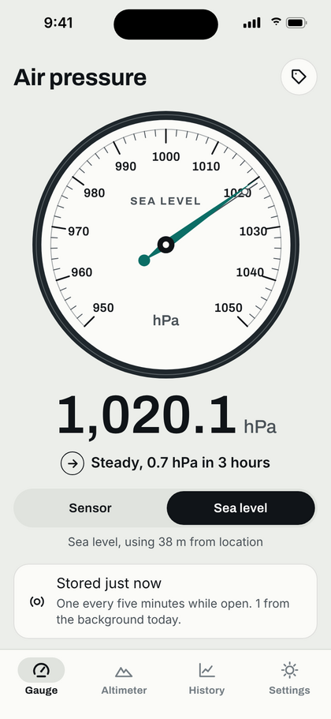
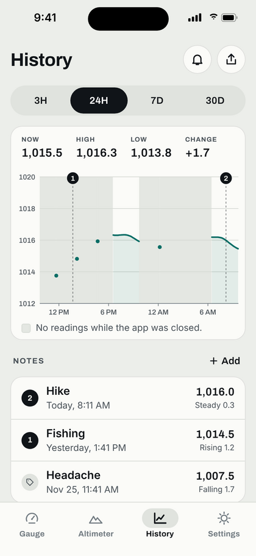
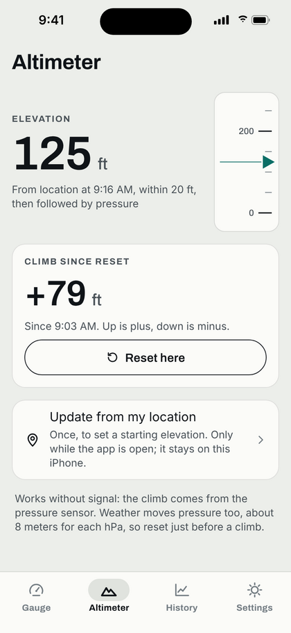
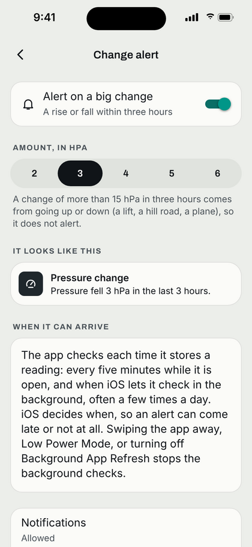
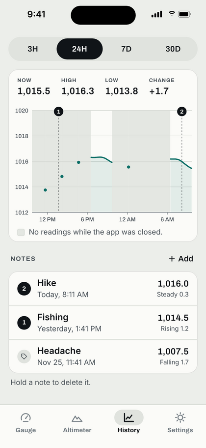
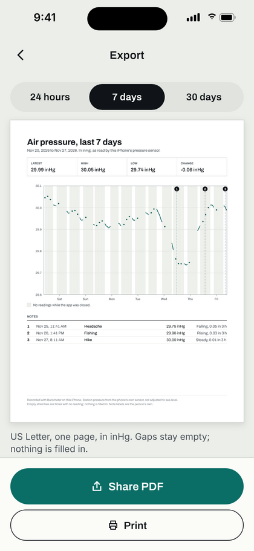

The air pressure where you are, right now.
Your iPhone already has a pressure sensor. Barometer shows it as a clear dial, tells you if it is rising or falling, and remembers it.
Get it on the App StoreiPhone. Free to download; the live barometer and altimeter are free.






People who feel the weather change in their head, sinuses or joints and want to see the pressure next to how they feel. Anglers and hunters who watch the barometer. Hikers who want their elevation with no signal. Anyone who likes a good instrument on the wall.
While the app is open it stores a reading every five minutes. When it is closed, iOS lets it check in the background from time to time, often a few times a day, and each check stores one reading. iOS decides when, so there are gaps, and the chart shows them as gaps. Swiping the app away, Low Power Mode, or turning off Background App Refresh stops the background checks.
No account and no server. Readings and notes stay on your iPhone and the app works in airplane mode. Location is used only on the Altimeter tab, only when you tap Use my location, and never leaves the phone. Barometer shows what the sensor reads; it is not a weather service. See the privacy policy and questions and answers.